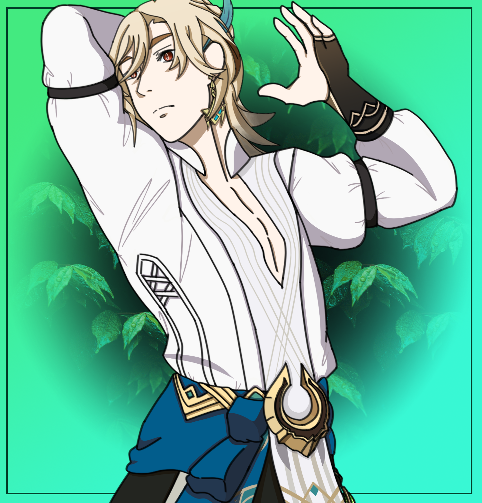
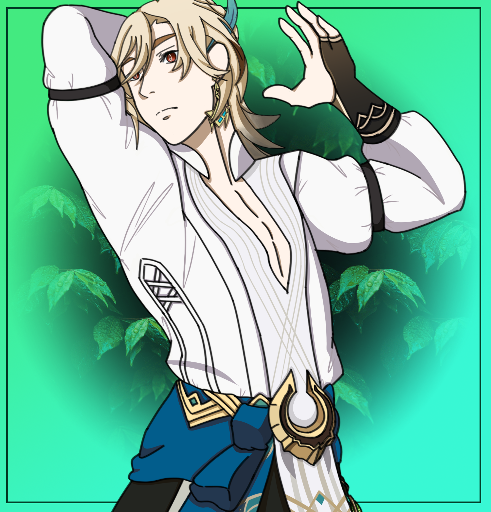

.
Vivre de son art, une possibilitée de plus en plus impossible.
Il devient de plus en plus difficile aujourd'hui de gagner sa vie par un travail d'artiste. Nos sociétés archi fonctionnelles arrivent difficilement à intégrer une matière aussi insaisissable et imprévisible que l'art à ses structures économiques. L'archivage illimité et l'accès gratuit à d'innombrables oeuvres sur Internet permettent au public de cueillir des chefs-d'oeuvre en série, sans penser aux intérêts de ceux et celles qui les ont conçus. Dans cette abondance, il y aura toujours des artistes prêts à travailler pour moins, dans le but de se faire connaître.
Qu'ils crèvent les artistes, titre d'une pièce de Tadeusz Kantor créée en 1985, devient un mot d'ordre qui résume bien une attitude répandue face aux artistes. Plus que jamais, on se nourrit de leur production diversifiée. Mais de là à payer pour ce qu'ils nous offrent, il y a une marge. Ce qui nous mène à une situation complexe et nous place devant de difficiles dilemmes.
L'État, grand mécène des arts pendant la seconde moitié de 20e siècle, se retire peu à peu de rôle dans lequel il avait pourtant excellé. Les coupes ne sont pas brutales, mais discrètes, progressives, inéluctables. La stratégie des gouvernements fédéral et provincial se ressemble. Les grands événements comme les festivals restent relativement bien subventionnés. On lésine peu sur la construction et la rénovation des théâtres, musées, etc. Mais les artistes y trouvent difficilement leur compte.
Le Conseil des arts et des lettres du Québec et le Conseil national des arts du Canada sont les organismes qui donnent le plus généreusement aux artistes. Mais leurs budgets stagnent. Ce qui équivaut en réalité à une baisse, étant donné l'inflation, et puisque les besoins sont toujours plus grands et les demandes plus nombreuses. Selon le Mouvement pour les arts et les lettres (MAL), « les demandes de bourses ont explosé, en hausse de 52 %, alors que le nombre de bourses accordées s'est à peine accru (10 %). La valeur de la bourse moyenne a augmenté de 3,7 % sur dix ans. Celle de la subvention moyenne aux organismes a reculé de 12 % depuis neuf ans » (Le Devoir, 26 janvier 2012).
Tout ceci s'inscrit dans une logique de désengagement de l'État dans le plus grand nombre de secteurs possibles et s'accentue à l'ère des plans d'austérité. Des chroniqueurs et journalistes de droite comme Nathalie Elgrably-Lévy et Krista Erikson (toutes deux à l'emploi du très « culturel » Pierre-Karl Péladeau) se complaisent à dénoncer grossièrement le pseudo parasitisme des artistes. Pourtant, il est évident que soumettre l'art aux lois du marché, comme plusieurs esprits pratiques le souhaitent, en vient inévitablement à tuer la créativité.
Article écrit par Claude Vaillancourt. Source de l'article au pied de page.
.
Être artiste, un loisir ou un métier?
Souvent confondu avec une passion, en termes de nomenclature, «artiste» est bel est bien une catégorie socioprofessionnelle répertoriée par l'Insee sous l'étiquette des métiers artistiques. Sont comptabilisées les personnes dont l'activité artistique (artistes de spectacles, auteurs, métiers des arts visuels, des arts graphiques, de la mode et de la décoration, etc.) est la principale source de revenus. Quant aux personnes qui ne vivent pas de leur art à titre principal, elles sont perçues comme des «amateurs». Historien de l'art et poète, Paul Guillon remarque qu'en général «les gens pensent que c'est une passion, un hobby plutôt qu'un métier. L'exemple c'est la poésie, elle est souvent confondue avec le fait de tenir un journal intime.»
«Je ne sais pas si c'est véritablement un métier (…) Disons que c'est plutôt une occupation rentable.» Cyril Debon, artiste
Mais pourquoi cette activité n'est-elle pas considérée dans la société comme une profession ? Pour le sociologue, auteur et metteur en scène Pierre-Alain Four, c'est assez logique : «Je pense que les artistes ont à la fois envie de dire que c'est un métier et en même temps, le fait d'être considéré comme des gens à part leur convient bien. Car c'est aussi ça qui leur permet d'acquérir un statut un petit peu unique. Il y a une ambiguïté qui n'est que très peu déconstruite.» Une ambivalence qui semble en effet convenir à Cyril Debon, artiste peintre et sculpteur : «Je ne sais pas si c'est véritablement un métier, avance-t-il. Mais ça y ressemble, puisque c'est mon activité principale, c'est comme ça que je gagne de l'argent. Disons que c'est plutôt une occupation rentable.» Enfin, se pose l'épineuse question de ce que l'on peut considérer ou non comme de l'art. «Beaucoup de métiers, notamment dans l'informatique, sont des métiers créatifs mais ils ne sont pas pour autant considérés comme tels», argue Pierre-Alain Four.
Article écrit par Manuel Avenel. Source de l'article dans le pied de page.
.
Emploi de l'artiste, pas sa place sur le marché du travail?
Sur le marché de l'emploi en Belgique, il existe 3 statuts : « Salariés », « fonctionnaires » et « indépendants ». L'artiste n'est pas un statut professionnel à proprement parlé mais est intégré dans les statuts existants. Un sous-produit en somme.
De mon point de vue, on ne va pas se mentir, il est très dur d'être pris au sérieux en tant qu'artiste sur le marché de l'emploi en Belgique. Par exemple, l'enfant qui annonce à ses parents qu'il veut devenir artiste. Comme la plupart des parents de notre société actuelle, ceux-ci ne verront pas spécialement cela d'un bon œil. Cela a été mon cas, ainsi que celui de beaucoup d'artistes.
En effet pour la plupart, être un artiste est plus un passe-temps qu'une perspective d'avenir et de fait, n'encourageront pas vraiment leur enfant à suivre cette voie. Comme par exemple suivre une formation solide et se diriger vers un métier qui s'y rapporte. Même si celui-ci a beaucoup de talent.
[...]Selon la situation géographique et la zone d'influence, le marché artistique peut-être soit limité, soit très florissant. Par exemple le marché de la bande-dessinée : très porteur sur le secteur de Bruxelles (comme par exemple la maison d'édition Casterman) mais inexistante sur le secteur de Liège. Mais tout dépend du domaine artistique que l'on vise, car un art n'est pas l'autre. Beaucoup de variantes entrent en jeu. Une zone peut être propice pour le théâtre et une autre pas du tout. La difficulté est de savoir où chercher.
Article écrit par ?. Source de l'article dans le pied de page.

 
